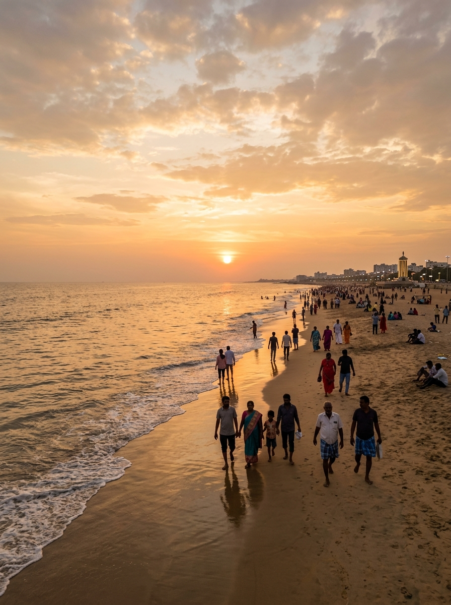

Kapaleeshwarar
The spirit of Mylapore

Elliot's Beach
Besant Nagar evenings

High Court
Indo-Saracenic red
San Thome
White on the shoreline

Broken Bridge
Where the Adyar ends

Royapuram
Fishing harbour dawn
Five interlocking systems that read Chennai in real time — safety data, traffic patterns, adaptive schedules, and the streets no map bothers to name.
Each module works standalone, but they share one map, one dataset and one sense of the city. Pick a direction.
Ward-level risk scoring built from Chennai Police crime zone data, NCRB district summaries and TNSTA accident blackspots. Know which junction turns hostile after 9 PM before you're standing in it.
Geocoded route analysis that cross-references your path against high-risk junctions and accident-prone corridors — not just the fastest line on the map. Kathipara at rush hour is a different road than Kathipara at noon.
Day plans that reflow when you linger over filter coffee. Shift one stop and the rest re-sequences around traffic, opening hours and daylight — no rebuilding the whole afternoon from scratch.
Check-ins and bookings verified against a decentralised identity record. Your documents stay yours; the hotel only gets the proof it actually needs, and nothing more.
Kasimedu at dawn, Linghi Chetty Street's ledgers, Broken Bridge at dusk. Forty-odd places the algorithms overlook, each with a pin you can actually open.
The spirit of Mylapore

Besant Nagar evenings
Indo-Saracenic red
White on the shoreline
Where the Adyar ends
Fishing harbour dawn
Start with a plan, or just wander — the city rewards both.